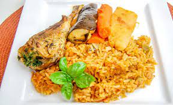

Riz au Gras
The national dish of Burkina Faso is riz gras or 'oily rice' in French.
This dish originates in Senegal but is commonplace throughout
West Africa with Burkinabé people making it their own.
The name comes from the overly plentiful amount of oil
used in the cooking process.
Ingredients
- Tomatoes
- Tomato paste
- Onions
- Beef/chicken/fish
- Oil
- Water
- rice
- Salt/ Maggi ..
- Habanero pepperes
- Garlic
- Water
Stepes to cook a nice Riz Gras dish
- Put the habaneros, garlic, tomatoes and onion into a food processor and pulse until you get a nice paste. Then heat the oil over medium heat and add the paste to the pan. Cook for 8 minutes, then remove from the fire and set aside.
- Use a little bit of water (about 1/2 to 1 cup) to rinse out your food processor, then put the water in a separate pot along with the meat. Bring the meat and water to a boil, then reduce heat. Simmer for 15 minutes.
- Add the meat (fish chicken beef) to the pan containing the paste. Add the tomato paste, water and Maggi (or stock) cube. Stir.
- Wash the rice until the water runs clear. Then add it to the pot and bring to a boil. Reduce heat, cover and let simmer for 15 minutes. Check it, then cook for another 10 minutes or until the water has been absorbed.
- Garnish with thin slices of onion.
Back to home page